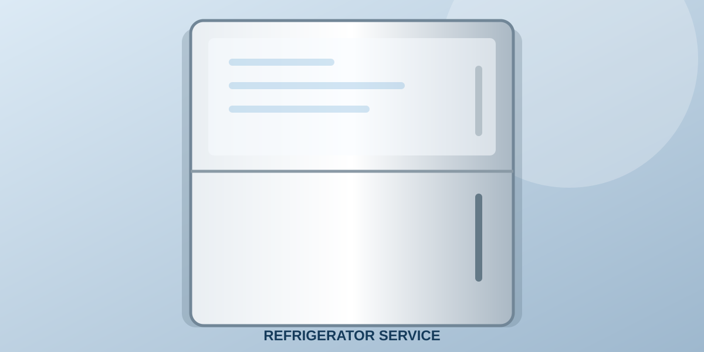

FRIDGE REPAIRRefrigerator Repair & Service
From weak cooling and water leakage to excess frost or a fridge that will not start, start with a clear description of the symptoms. The service team can discuss the appropriate inspection and next steps.
- Fridge not cooling
- Fridge not starting
- Water leakage
- Excessive ice or frost
- Unusual noise
- Temperature fluctuation